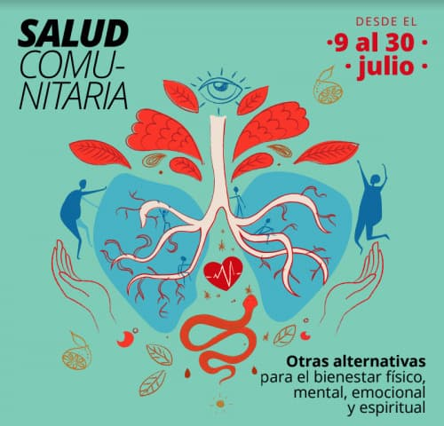

Salud comunitaria
Te invitamos a disfrutar de cuatro sesiones audiovisuales que te harán descubrir cómo nuestro mundo emocional está ligado a nuestro bienestar físico, mental y espiritual. Ven a nutrir tu espíritu y tu cuerpo en un viaje hacia lo sensorial.
Organizan: Parque Cultural de Valparaíso, Círculo Social de Terapeutas de Valparaíso, Colectivo TranSalud Comunitaria y CESFAM Marcelo Mena.
Conoce más
Explora otras alternativas para el bienestar a través de las actividades de salud comunitaria.
